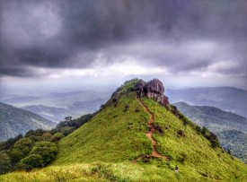

Kasaragod
The northernmost district of Kerala, Kasaragod is renowned for its hills, forts and water bodies. The coir and handloom industry here are extremely famous around the world. The place is also popular for its ancient temples and rich biodiversity. It is an important border district as well that regulates trade with a lot of neighbouring States.
Top Destinations
Bekal Fort
Bekal is a small town on northern coast of Kerala where you will discover a giant keyhole-shaped fort (Citadel). History and legend are interwoven together in Bekal. The 300 year old Bekal Fort is largest and best-preserved citadel in Kerala which faces to the Arabian Sea. This fort was constructed in 1650 CE. You can see the beauty of the Fort as well as the waves of the sea.The fort is well maintained with a wide beautiful garden. This imposing circular structure of laterite sites rises 130 feet above sea level and stands on a 35 acre headland that runs into the Arabian Sea. The fort walls are built to the edge of the beach. The Arabian Sea looks amazing from the view point.
Ranipuram Hills
Ranipuram Hills is a popular scenic hotpot in Kasaragod district which is situated about 43 km away from Kanhangad. This picturesque stretch of hills stands at a height of 750 m above sea level and is the point of highest altitude in the entire district.Ranipuram comprises of evergreen Shola forests, wildflowers, moors and sprawling meadows that is home to an assortment of flora and fauna common to the Western Ghats. The proposed Ranipuram Wildlife Sanctuary encompasses this forest and hills and is a biodiversity hotspot. The region merges with the Coorg Mountains of Karnataka and also with the Talacauvery Wildlife Sanctuary. The total distance of the trek is 5 km to the top and back.

Thaikadappuram Beach
An ideal locale for a peaceful vacay! If rare and unexplored fauna catches your attention then you must visit this beach in the monsoon season to watch some olive ridley turtles. Watch the sand turn golden and the sun setting with vivid colors. Just sit in silence and see the wonders nature has to offer or have a frolicking time with your troop at one of the best tourist places in Kasaragod.